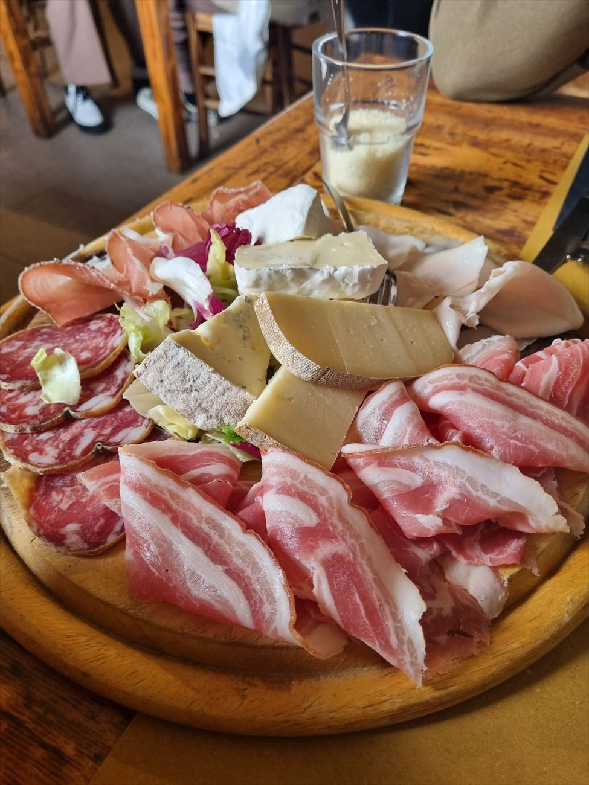
La fattoria
Allevamento estensivo e alimentazione prodotta soprattutto in azienda. I capi sono iscritti al libro genealogico della razza bovina piemontese.
Villanova d'AstiLa carne di Fassone che alleviamo nella nostra azienda agricola, cotta sulla brace o chiusa in un hamburger fatto da noi. Dal produttore al consumatore, senza passaggi in mezzo.
Cascina Capello è un'azienda agricola con più di sessant'anni di storia, tra Asti e Torino. Alleviamo, lavoriamo la carne nella nostra agrimacelleria e la portiamo in tavola all'AgriGrill.

Allevamento estensivo e alimentazione prodotta soprattutto in azienda. I capi sono iscritti al libro genealogico della razza bovina piemontese.
Villanova d'Asti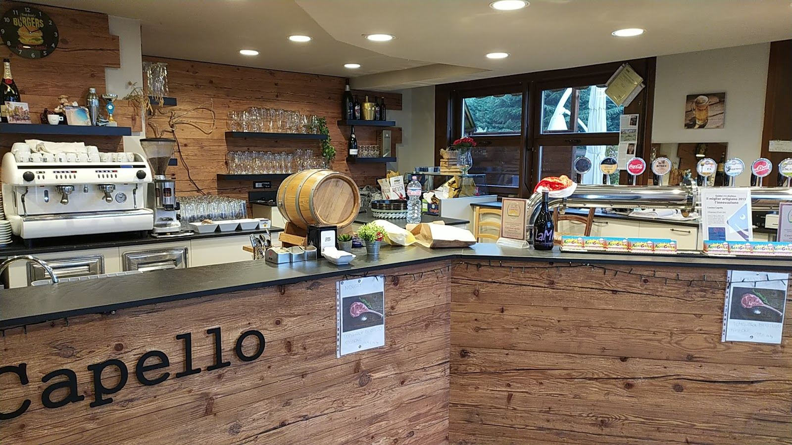
I tagli si preparano da noi: filetto, sottofiletto, battuta al coltello, salsiccia, i salumi della casa e la gallina bionda di Villanova.
Iscritta al registro delle eccellenze italiane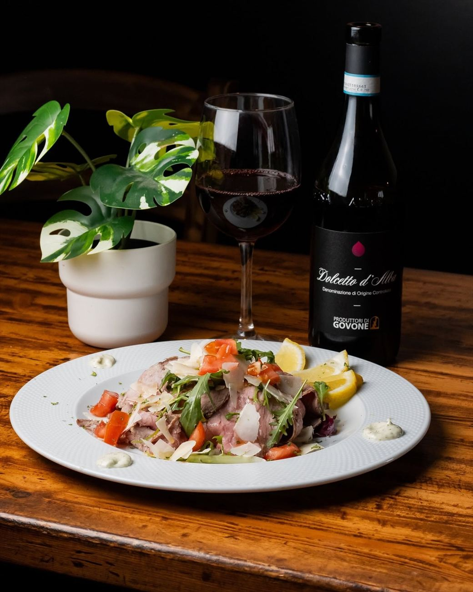
All'AgriGrill la carne arriva senza giri lunghi: alla brace, cruda al coltello o in un hamburger, con i vini del territorio.
Riva presso Chieri · ChieriTocca o passa sopra una parte del Fassone.
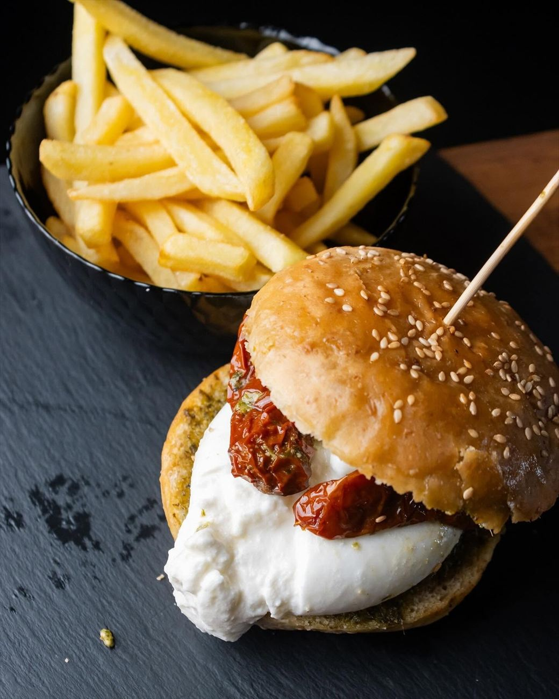
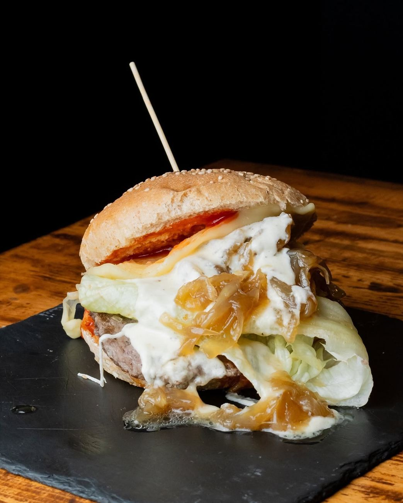
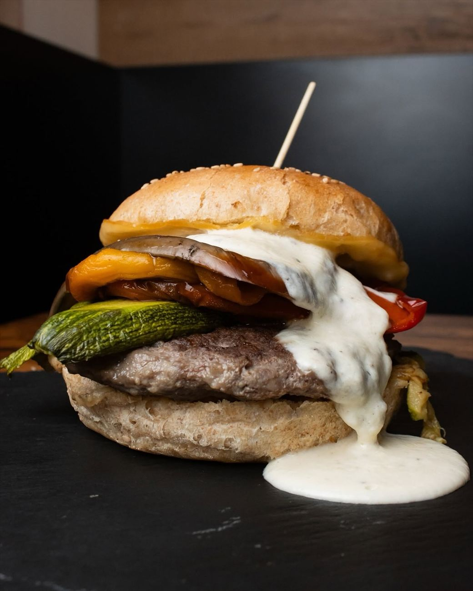
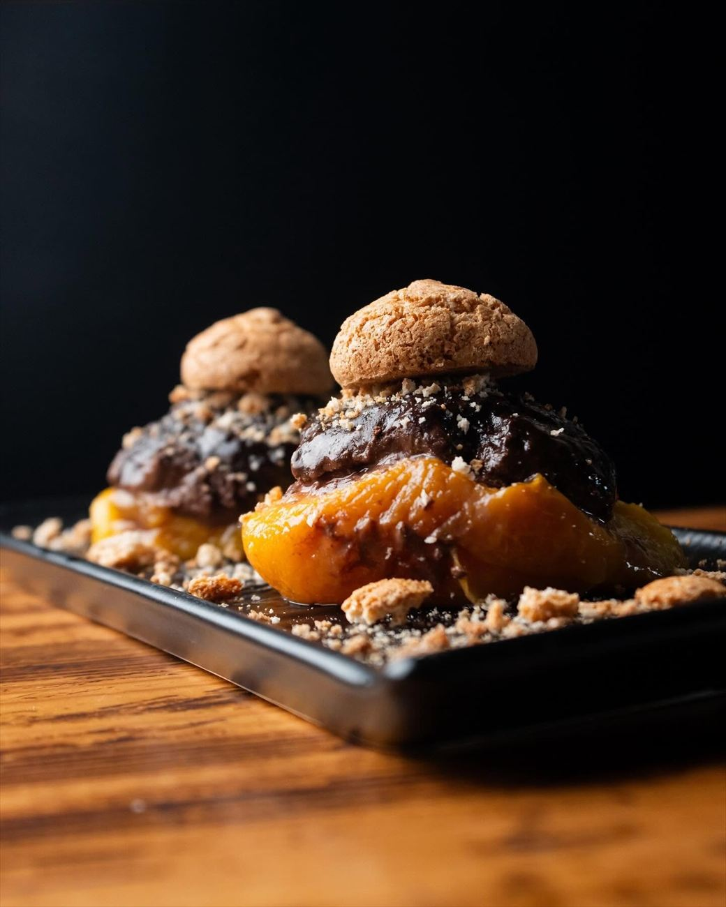
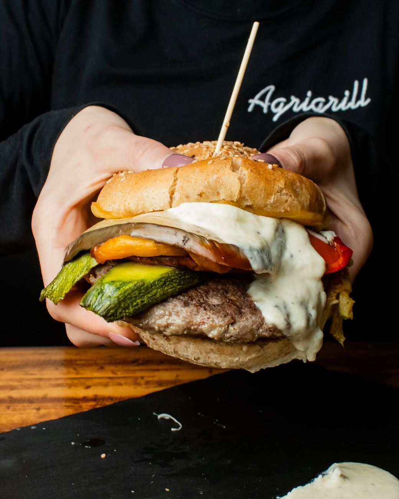
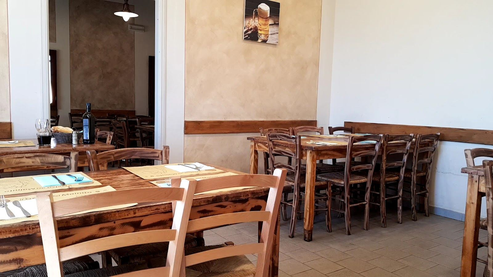
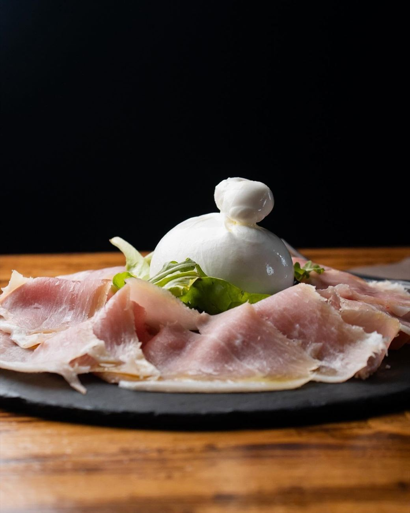
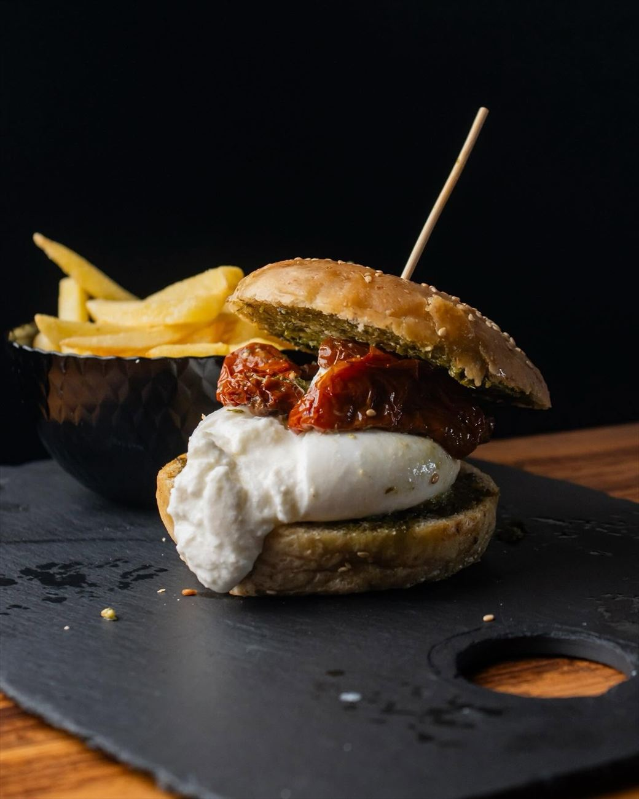
Un locale semplice e caldo, con il bancone in legno e i posti all'aperto. Si viene per una costata, per un hamburger con gli amici o per le serate a tema con il menù completo.
Strada Padana Inferiore, 26
10020 Riva presso Chieri (TO)
Pranzo e cena
Piazza Cavour, 3
10023 Chieri (TO)
Pranzo 12–15 · cena 19–23
Hamburger e piatti da portare a casa, anche con consegna.
Grigliate, fritto misto, bollito e serate a tema a prezzo fisso, su prenotazione.